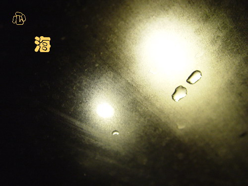

3月14日，白色情人节（white day）。 2月14日，女子给男子送黑色巧克力。3月14日这天，男子给女子送白色巧克力。 在上海工作的SHIN晚上11点多钟下班，敲女友Angie的家门，送了一块白色巧克力给她。:wink:
3月14日，我被自己的理智吓倒。 非常冷，洗了热水澡。

或者去掉那两个字，感觉画面就非常好了:neutral:
我倒是觉得那两个字改为空心花体比较好 :wink:
水不好看,要是圆的水珠就好了,完美:razz:
??? 画面上多了两个汉字就感觉这照片好像不是你拍的。对，风格不像。
理智不可怕
此图不能盯着太长时间看, 看长的头晕......太亮
:wink:我最近特别喜欢给图片上添加文字,嘿嘿~~:mrgreen: 这是汽车天窗，窗外是路灯，那天晚上比较冷，因为电影还有些时间才播映，所以坐在车上等。手边正好有相机，随手拍下的照片。 没觉得那两个大大的水珠很动人么？！
一片漆黑之中看到了水、光......
总算有新内容了，还以为你为了那FF捣蛋鬼不高兴了呢，:wink:
存档只读，评论已关闭。
Name (required)
Email (will not be published) (required)
Website
« emotion.city | 网络友情 »
9 Responses to “白色情人节”
2006-03-15
或者去掉那两个字，感觉画面就非常好了:neutral:
2006-03-15
我倒是觉得那两个字改为空心花体比较好 :wink:
2006-03-15
水不好看,要是圆的水珠就好了,完美:razz:
2006-03-16
???
画面上多了两个汉字就感觉这照片好像不是你拍的。对，风格不像。
2006-03-16
理智不可怕
2006-03-16
此图不能盯着太长时间看, 看长的头晕......太亮
2006-03-16
:wink:我最近特别喜欢给图片上添加文字,嘿嘿~~:mrgreen:
这是汽车天窗，窗外是路灯，那天晚上比较冷，因为电影还有些时间才播映，所以坐在车上等。手边正好有相机，随手拍下的照片。
没觉得那两个大大的水珠很动人么？！
2006-03-16
一片漆黑之中看到了水、光......
2006-03-16
总算有新内容了，还以为你为了那FF捣蛋鬼不高兴了呢，:wink:
Leave A Reply
存档只读，评论已关闭。